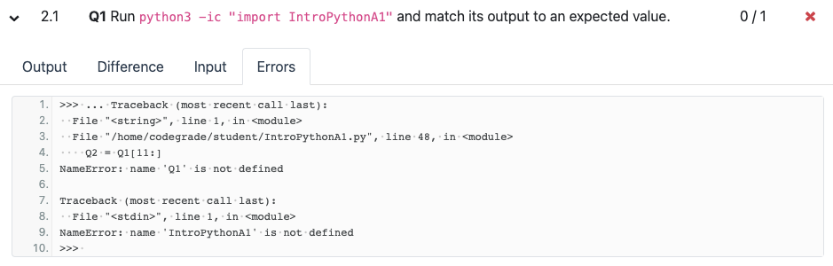
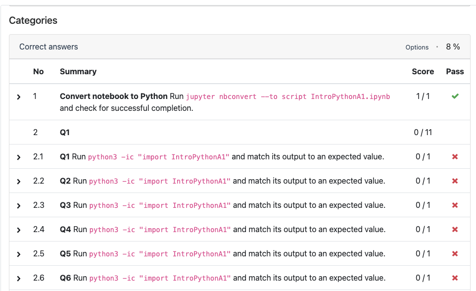
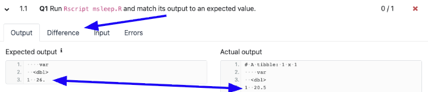
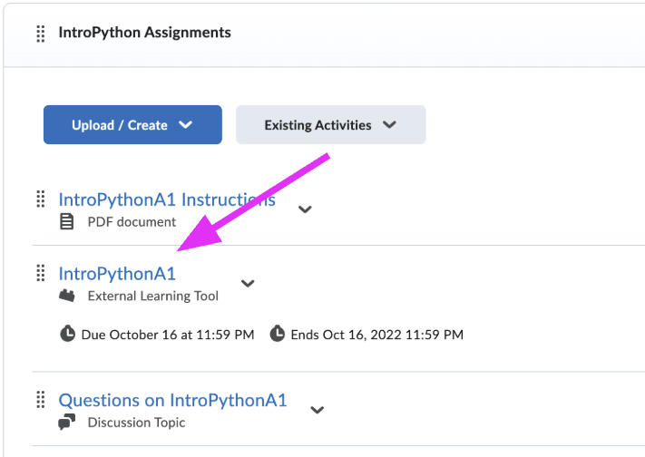
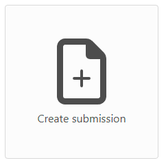
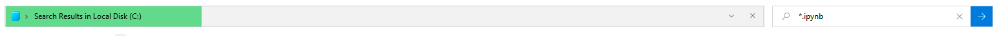
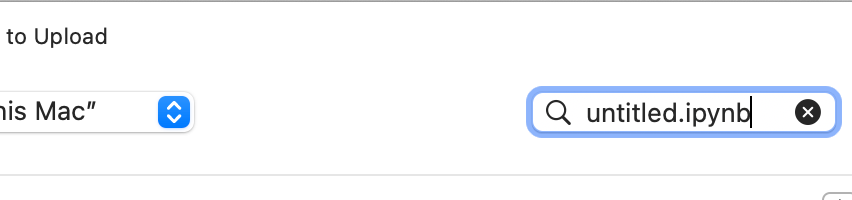
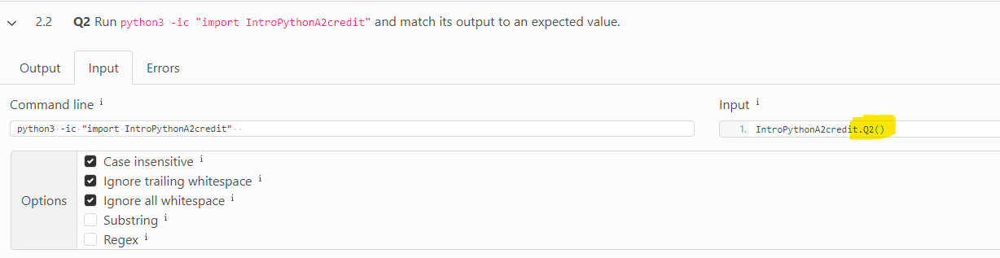
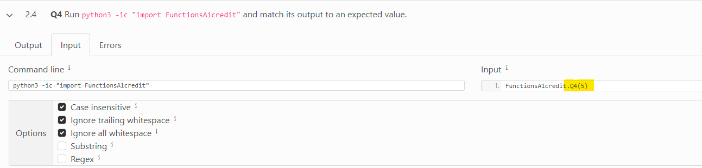
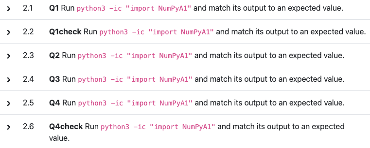

Everything about submitting your work, in one place.
Pick the one that matches your situation. You do not need to read the rest.
print() statements
and function calls that make correct answers score zero. Nothing is uploaded.
If you would rather read
def Q3() rather than Q3 = , where the
indentation goes, and how to look up whether your function should take an
argument instead of guessing.
Small things that cost marks
Capitalization, strings against lists, and why your random
numbers do not match the expected ones.
The practice assignment
Your first submission, deliberately easy. Two questions and the
answers are given - the point is to see what submitting feels like.
Drop your .ipynb in and it will look for the things that make
CodeGrade mark correct work as wrong. It cannot tell you whether your
answers are right - only whether the file will be graded fairly.
Drop your notebook here
or
Your file never leaves this computer. It is read in the browser, checked here, and nothing is uploaded or stored.
print() statements or function calls in
your file. This is by far the most common reason a student's work
is marked wrong when every answer in it is correct.
CodeGrade runs your file and then calls your objects itself to check
them. To grade Q1 it runs Q1() and reads what comes
back. If your file already printed something, or already called
Q1(), that output lands in the middle of what CodeGrade is
trying to read, and the comparison fails.
✓ Submit this
Q1 = 'Welcome to EU!'
Q2 = 1+1✗ Not this
Q1 = 'Welcome to EU!'
print(Q1)
Q2 = 1+1
print(Q2)The same rule for functions - define them, do not call them:
✓ Submit this
def Q3(x):
return x * 2✗ Not this
def Q3(x):
return x * 2
Q3(5)# or delete them. Keeping them
in one cell at the bottom makes them easy to find. Or run the checker above,
which will tell you if you missed one.
What is happening?
The Errors tab tells you what went wrong. A common one is a
name that does not exist - if you called your answer Q100 when
the assignment asked for Q1, CodeGrade reports that
Q1 was never defined. Fix the name and it passes.

Q1 was never defined, because it had been created under a different name.
The Difference tab shows what was expected against what your
code produced - for example, expected 26.0 where you gave
20.5. That is a calculation problem, so go back to the
instructions and check each step.

26., produced 20.5. Nothing is broken - the calculation is simply wrong, so go back to the instructions.Most problems are one of the above. If you have worked through all of it and still cannot see the cause, email us with the assignment name and what you have already tried.
You don't. Click the assignment link in Brightspace and it takes you straight to the submission portal.

You do not need to download anything. Your notebook is already on your computer - name it as the assignment asks, then drag it into CodeGrade.

Windows: open File Explorer, search for your filename - or
type *.ipynb and press Enter to list every notebook on the
machine - then drag the file into the CodeGrade window.

*.ipynb in the search box lists every notebook on the machine, which is quicker than remembering where you saved it.Mac: search for the filename from the top right, then drag it in.

When the instructions say create a function named Q3, they mean a function. An assignment is not one:
✓ A function
def Q3():
return 42✗ Not a function
Q3 = 42
The body of a function is indented. Anything after it, at the same level as
def, is outside the function:
✓ Correct
def Q4(x):
total = x + 1
return total✗ Wrong — line 3 is over-indented
def Q4(x):
total = x + 1
return total
An IndentationError naming a line number is telling you exactly
where to look. The error translator explains
the ones this course raises.
Some questions want a function that takes an argument and some do not, and
getting it the wrong way round makes the answer fail. You can look
this up rather than guessing: the Input tab in
CodeGrade shows the exact command it uses to run your function. If it shows
Q5() your function takes nothing; if it shows
Q5(3) it takes an argument.

Q2(), so your function must work when called with nothing.
Q4(5), so your function must accept a value. Same tab, different answer - which is why it is worth looking rather than guessing.
Some questions are named Q1check, Q4check and so
on. These do not test your value - they test that you built the right
kind of thing. A common one is checking you made a NumPy array
rather than a plain Python list. Losing points on Q4check means
Q4 exists but is the wrong type, so re-read what the question
asked you to create.

Q1check and Q4check are separate rows with their own marks. They test the type of what you made, not its value.'Hello World' and
'hello world' are different answers.'a' is not
['a'].Your first submission is deliberately easy - two questions, and the answers are given. The point is to see what submitting feels like before it counts.
practice.ipynb.Q1, a string containing Welcome to EU!Q2, equal to 1 + 1.The whole file should be:
Q1 = 'Welcome to EU!'
Q2 = 1+1Then run it through the checker at the top of this page, and submit.